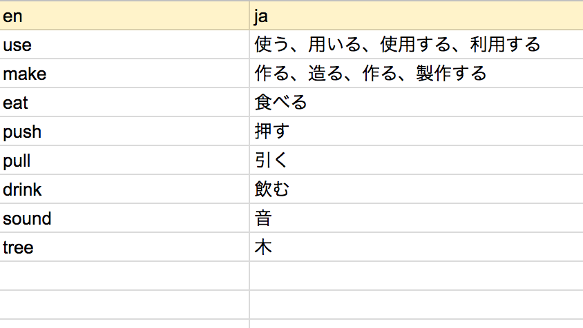
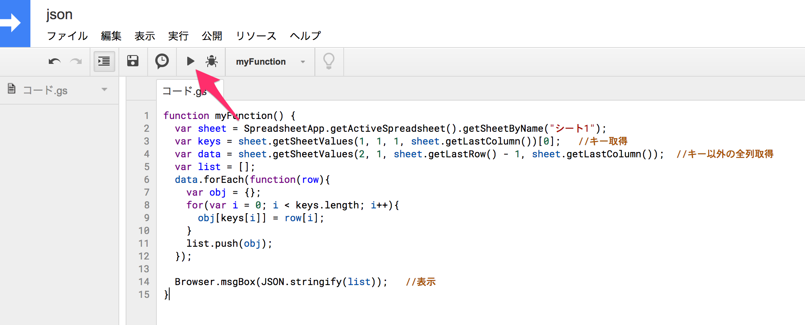
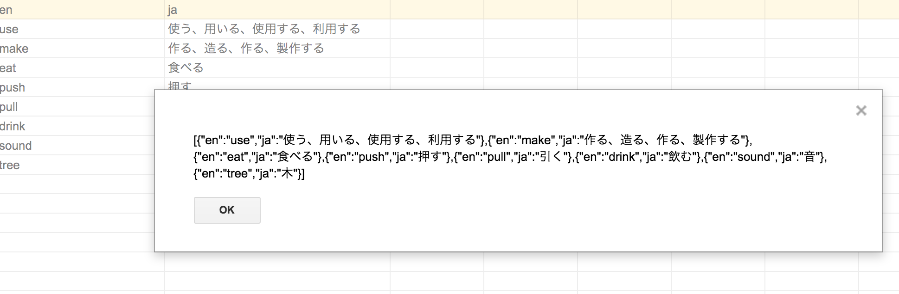
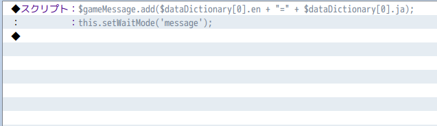
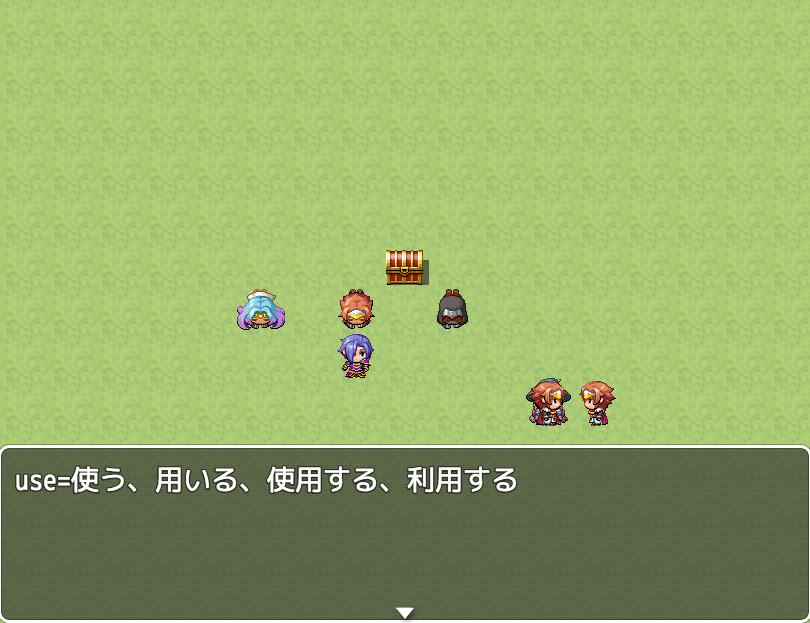

スプレッドシートからjsonにしてツクールに取り込む
ツクールMVでは自分で作成したjsonファイルをゲームに取り込むことができます。
デフォルトにある武器、防具、アイテムといったデータベースだけでなく、自由にデータを取り込めるので便利です。
私はGoogleのスプレッドシートでデータを管理していることが多いので、そこからjsonファイルを吐き出して取り込むということをよくします。今回はそのやり方を書きます。
スプレッドシートからjsonを吐く
今回、例として英和単語帳を作ります。こんなの。

スプレッドシートのメニューの「ツール」から「スクリプトエディタ」を開きます。
開いたら、以下のようなコードを用意します。シート名は適宜変更してください。
function myFunction() {
var sheet = SpreadsheetApp.getActiveSpreadsheet().getSheetByName("シート1");
var keys = sheet.getSheetValues(1, 1, 1, sheet.getLastColumn())[0]; //キー取得
var data = sheet.getSheetValues(2, 1, sheet.getLastRow() - 1, sheet.getLastColumn()); //キー以外の全列取得
var list = [];
data.forEach(function(row){
var obj = {};
for(var i = 0; i < keys.length; i++){
obj[keys[i]] = row[i];
}
list.push(obj);
});
Browser.msgBox(JSON.stringify(list)); //表示
}
そしたら、実行ボタンで実行。

スプレッドシート画面に戻ると以下のように出力されてます。

[{"en":"use","ja":"使う、用いる、使用する、利用する"},{"en":"make","ja":"作る、造る、作る、製作する"},{"en":"eat","ja":"食べる"},{"en":"push","ja":"押す"},{"en":"pull","ja":"引く"},{"en":"drink","ja":"飲む"},{"en":"sound","ja":"音"},{"en":"tree","ja":"木"}]
辞書データになってますね。
ツクール側から使用する
ツクールフォルダのdataフォルダにDictionary.jsonとしてファイルを作成し、上記出力内容をコピペします。
そしたら、以下のようなプラグインを作って有効化します。
これで自動的にjsonファイルを読み込み、$dataDictionary変数から使えるようになります。
(function () {
DataManager._databaseFiles.push(
{ name: '$dataDictionary', src: 'Dictionary.json'}
);
})();
試しに、以下のようなイベントを実行してみます。


うん。ちゃんと扱えてます。
こんな感じで、スプレッドシートから作ったjsonファイルをツクールで読み込むことができました。
イベントテストで読み込めない
上記のイベントをイベントテストするとロードエラーがでます。
というのも、イベントテスト時はdataフォルダ配下にTest_Actors.jsonみたいにTest_が付与されたデータファイルが生成されます。自分で追加したjsonファイルは自動的にTest_ファイルが生成されないため、エラーが出るのです。
対策としては、Test_のファイルを手動で作っておいておくことが挙げられます。
今回でいえば、Test_Ditionary.jsonを置いておくことになります。